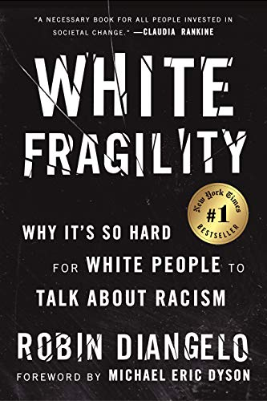
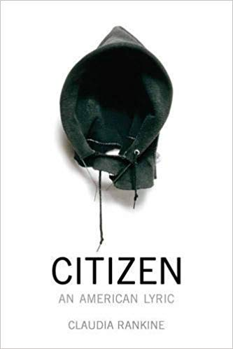

As protests continue to erupt in Minneapolis and around the country following the murder of George Floyd at the hands of the police — only the most recent and publicized of many such murders — people have understandably been turning
to their online social networks to learn more about how to engage in anti-racism work. For white and non-Black people, comprehensive education on how to be an effective ally, and on the history of racism, is sorely lacking
in our schools and families, but is widely available if you know where to look.
While social media is a useful tool for sharing information, nothing compares to good old-fashioned reading. If you are a white or non-Black person, this is a critical time to learn how to be a better ally, and there are plenty of books
to help you get started with just that. Below, a list of 11 books, in no particular order, that every ally should read — and that make great gifts for friends and family who could use a refresher as well.
White Fragility: Why It's So Hard For White People To Talk About Racism by Robin DiAngelo

Sociologist Robin DiAngelo's New York Times bestseller breaks down how white people's reactions to being confronted with racism often only further perpetuate racism. It is now as relevant as ever, especially in the social media age. Citizen: An American Lyric by Claudia Rankine

The multi-award winning follow-up to Rankine's Don't Let Me Be Lonely: An American Lyric, Citizen tells the story of modern-day, 21st-century racism and its impact on everything from daily life to national conversations. In poetic
language, Rankine meditates on the mounting aggressions faced everywhere from the classroom to the tennis court (Serena Williams, in this case).
The New Jim Crow: Mass Incarceration In The Age Of Colorblindness by Michelle Alexander
The Condemnation of Blackness traces the different ways working class white and European immigrants are and have historically been treated,compared to the criminal suspicion Black people face,and how these deeply rooted beliefs have
influenced urban development and social policies. If you're interested in how racism has shaped our cities,this is for you.
Dying Of Whiteness: How The Politics Of Racial Resentment Is Killing The American Heartland by Jonathan M. Metzl
Tim Wise uses essay and memoir to demonstrate how racism not only impacts non-white people, but also how it continues to specifically benefit white people in ways that have long become absorbed into the national conscience as "normal."
An accessible appeal to white people that using their unearned privilege for good is in their own best interest.
The History Of White People by Nell Irvin Painter
If you have not yet read Malcolm X's autobiography, there is no time like the present. The fascinating book traverses Malcolm's early life in Nebraska, his youth as a hustler in New York City, his spiritual awakening in prison,
and his life as a minister of anti-racist rhetoric, up until his assassination in 1965. It's a piece of American history that lays the foundation for so many of the issues we are still grappling with today.
Sister Outsider by Audre Lorde
Audre Lorde's classic collection of 15 essays and speeches addresses racism, sexism, ageism, homophobia, class, and more in a compelling manner that will stay with you long after you've finished reading.
How To Be An Antiracist by Ibram X. Kendi
Ibram X. Kendi's award-winning 2019 book, How To Be An Antiracist, points us in the direction of the future while addressing the unbearable present circumstances that we are still living under. An updated primer on modern anti-racist
thought, this is a great starting place for all who want to see racism clearly and work to oppose it in our systems and ourselves.